About Me
I'm Nicholas Abad, a Data Scientist / AI Engineer based in Berlin with 6+ years building production ML systems, currently focused on LLM/RAG retrieval and evaluation in regulated technical domains.
At Fuchs und Eule, a Berlin greentech focused on residential energy efficiency and renovation, I'm the sole data scientist across three production AI products — two built from scratch and one taken from early MVP to production.
I own the retrieval and evaluation stack for an LLM-first search product over 350k+ German/English technical documents (energy regulations, DIN standards, BAFA/KfW funding rules) used daily by 40+ consultants and analysts.
I built a document-AI pipeline that classifies invoice line items against complex external funding rules with auditable, structured outputs, and scaled a geospatial ML pipeline that turns public 3D building data into physics-based DIN 18599 simulations, taking energy-analyst effort from 3–8 hours down to seconds.
Without a dedicated PM on the ML side, I also drive roadmap and acceptance criteria across the three workstreams, and recently presented the technical roadmap to investors during a funding round.
Before Fuchs und Eule, I completed my PhD in Applied Bioinformatics at the German Cancer Research Center (DKFZ) in Heidelberg, where I built clinical decision support tooling for molecular tumor boards and a Python ETL pipeline that filtered and scored 80M+ candidate mutations for in-vitro validation.
My thesis, "REMIND-Cancer: A Recurrence-Agnostic Workflow for Identifying and Prioritizing Functional Promoter Single Nucleotide Variants", is available here.
Alongside the PhD, I taught 100+ non-technical professionals across 13 data science bootcamps at CodeOp, geared toward women and people from the LGBTQ+ community who remain underrepresented in tech.
Originally from Silicon Valley. I earned my Bachelor's in Mathematics at the University of San Francisco, my Master's in Data Science at Lancaster University in the UK, and then moved to Cologne to work as a Machine Learning Engineer first at a start-up and then at a consultancy before heading to Heidelberg and Berlin.
Data Scientist / AI Engineer
Production LLM/RAG retrieval and evaluation in regulated technical domains. PhD-trained, end-to-end ownership.
- Focus: LLM/RAG retrieval & evaluation
- Stack: Python, FastAPI, MLflow, LangChain, BGE/Chroma
- Currently: Sole DS / AI Engineer at Fuchs und Eule (Berlin)
- From: Silicon Valley → Berlin
- Education: PhD Applied Bioinformatics, DKFZ (2024); MSc Data Science, Lancaster; BSc Mathematics, USF
- Languages: English (native), German (learning)
- Open to: new senior IC roles
Skills
Languages & Data
- Python (10+ years)
- SQL (6 years)
- R (6 years)
LLM / RAG Stack
- LLM/RAG retrieval & evaluation
- Embeddings (BGE) over Chroma
- Cross-encoder reranking, k-tuning
- LangChain (document chunking)
- MLflow-tracked retrieval & answer-quality eval workflows
Production Engineering
- FastAPI, Pydantic, PyTest
- Docker, AWS
- PostgreSQL
ML & Research Foundations
- Transformers (PyTorch, TF/Keras)
- Bayesian methods & applied statistics
- Bioinformatics
Years of Python Experience
Years Building Production ML Systems
Production AI Products Owned End-to-End
Cups of Coffee Drank
Resume
Education
PhD in Applied Bioinformatics
German Cancer Research Center (DKFZ)
Heidelberg, Germany
Dec 2020 - Oct 2024
Division of Applied Bioinformatics at the DKFZ
Faculty of Engineering at Heidelberg University
-
Built an interactive Flask/Dash clinical decision support dashboard for mutation analysis, used by clinicians and oncologists in weekly molecular tumor boards to support data-driven treatment decisions.
Designed a scalable Python ETL pipeline integrating multimodal patient-derived biological datasets (genomic, transcriptomic), filtering and scoring 80M+ candidate mutations for downstream in-vitro validation via luciferase assays — in a clinical research environment with rigorous data-quality and reproducibility requirements.
Achieved top 10% rank among 292 teams in a public NLP benchmark by building a CNN/Transformer language model from scratch with Bayesian-optimized hyperparameters in TensorFlow/Keras.
Thesis: "REMIND-Cancer: A Recurrence-Agnostic Workflow for Identifying and Prioritizing Functional Promoter Single Nucleotide Variants" (link).
Masters Degree in Data Science
Lancaster University
Lancaster, United Kingdom
Specialization in Statistical Inference
Oct 2017 - Sep 2018
Graduated with Distinction (Highest Honors)
Courses Taken:
-
Bayesian Inference
Likelihood Inference
Distributed Artificial Intelligence
Applied Data Mining (NLP)
Generalized Linear Models
Data Mining (Neural Networks)
Bachelors in Mathematics
University of San Francisco
San Francisco, CA
Minor in Computer Science
Aug 2012 - May 2016
Courses Taken:
-
Data Mining
Statistics
Probability
Mathematical Modeling
Econometrics
Linear Algebra
Combinatorics
Programming in Python
Programming in R
Data Structures and Algorithms
Professional Experience
Data Scientist / AI Engineer
Fuchs und Eule
Berlin, Germany
May 2025 - Present
LLM/RAG search (built from scratch): Own the retrieval and evaluation stack for an LLM-first search product over 350k+ German/English technical documents. Designed query routing, LLM-driven multi-step query decomposition, LangChain-based chunking, BGE embeddings with cross-encoder reranking over Chroma, and k-tuning. Built a living query set and MLflow-tracked evaluation workflow covering retrieval precision and answer quality. Used daily by 40+ consultants and analysts.
Document AI (built from scratch): Production ML pipeline classifying invoice line items against complex external regulatory rules (BAFA/KfW funding eligibility), with auditable, structured outputs replacing manual expert review.
Geospatial ML (scaled from early MVP to production): Automated building-energy pipeline using public 3D data (LoD2) to predict roof/wall/window components and feed DIN 18599 physics simulations via a kernel endpoint, reducing energy-analyst effort from 3–8 hours to seconds.
Cross-functional & product ownership: Owned the product layer across all three workstreams in the absence of a dedicated PM — driving roadmap, prioritization, stakeholder discovery, and acceptance criteria for ML deliverables. Presented the technical roadmap to investors during a funding round.
Detailed Description of Tasks
Lead Data Science Instructor (Part Time)
CodeOp
Barcelona, Spain (fully remote)
April 2022 - Aug 2025
Taught 100+ non-technical professionals across 13 data science bootcamps covering Python, SQL, statistics, A/B testing, and ML (regression, tree-based models, clustering, and deep learning). The bootcamps are geared toward women and people from the LGBTQ+ community, who remain underrepresented in tech.
Data Science / ML Consultant
Alexander Thamm GmbH
Cologne, Germany
Jan 2019 - Dec 2020
Built an MVP sales forecasting application from scratch combining XGBoost, Prophet, and deep learning (CNNs/RNNs), presenting findings directly to the client.
Detailed Description of Tasks
Computer Vision Data Scientist
fedger.io
Cologne, Germany
Nov 2018 - Dec 2019
Designed and built a custom object-detection CNN (Faster R-CNN with Bayesian Optimization), implementing customized loss functions and anchor generation strategies to achieve ~80% detection accuracy.
Detailed Description of Tasks
Data Science Intern
Co-op Insurance
Manchester, United Kingdom
June 2018 - Sep 2018
As part of my Master's dissertation, I implemented both parametric and non-parametric modeling techniques and hyper-parameter optimization methods to improve the Co-op's Motor Insurance rates.
Detailed Description of Tasks
Selected Projects
Selected production AI products from my current role at Fuchs und Eule, described by function and domain.
Relevant GitHub Repositories
From my PhD at the DKFZ. Production code from my current work is private.
Consulting
Outside of my role at Fuchs und Eule, I take on two distinct kinds of work: end-to-end project work for individual clients, and 1:1 coaching for learners. The items below are recent examples — happy to chat about other ideas you have in mind.Independent Project Work
End-to-end systems I've built independently — covering data engineering, ML pipelines, and live dashboards. Below is one recent example.
Energy Generation Dashboard
For an independent climate researcher · Live in production
A monthly-updated dashboard tracking coal-power generation across six regions of the world — the United States, Europe, India, Brazil, Australia, and Japan. Built end-to-end:
Data extraction: Python pipeline pulling from six official government data sources (EIA, ENTSO-E, NPP, ONS, OE, OCCTO).
Storage: Neon Postgres as the single source of truth.
Frontend: Next.js dashboard deployed on Cloudflare.
Automation: GitHub Actions running monthly extraction crons.
1:1 Coaching
Topics I take on for individual learners, building on 13 bootcamps and 100+ students taught at CodeOp. Examples below.
Coding in Python/R
For basic or intermediate students.
Potential Topics:
-
Python Fundamentals
Functions and Modules
Data Structures
Intermediate Topics
Coding Best Practices
Data Science
For basic or intermediate students.
Potential Topics:
-
Introduction to Data Science
Data Manipulation
Statistical Theory
(Un)supervised ML Algorithms
Data Visualization
Story Telling via Data
Have something different in mind? Drop me a note — happy to do a free intro call.
Outside of Work
Outside of work: basketball, American football, soccer, and baseball; cooking my way through cuisines (currently Turkish, though I always come back to Filipino); a soft spot for lambics and saisons; and slowly getting better at German. Here are some of my favorite pictures from over the years.
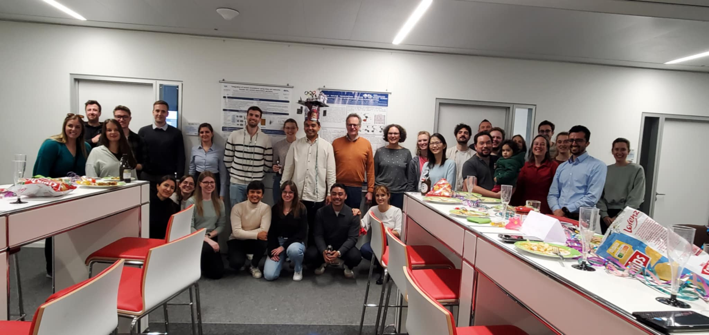
Heidelberg, Germany 2024
My group, the Division of Applied Bioinformatics.
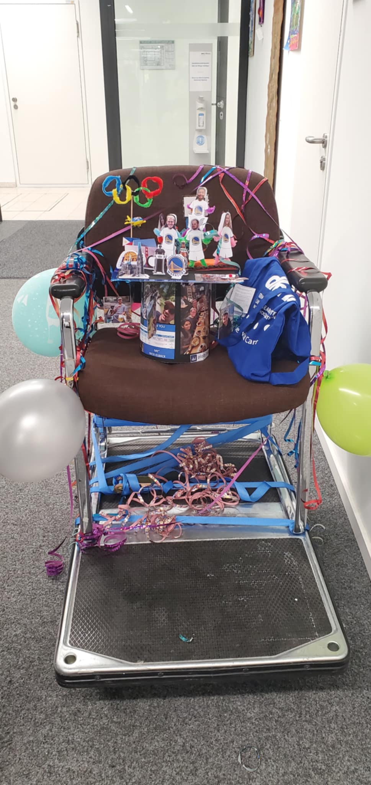
Heidelberg, Germany 2024
My PhD hat that my group thankfully made for me!!!
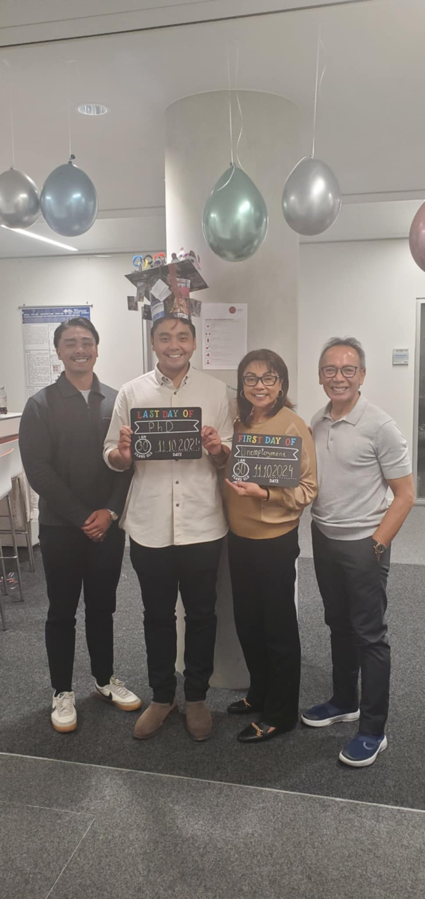
Heidelberg, Germany 2024
My parents and brother
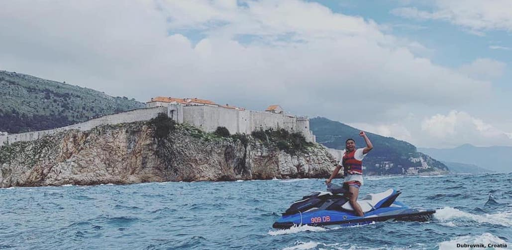
Dubrovnik, Croatia - 2019
Some of my best friends from San Francisco and I decided to rent jet-skis and go around the Adriatic Sea. Pictured in the background is the Fort Lovrijenac.
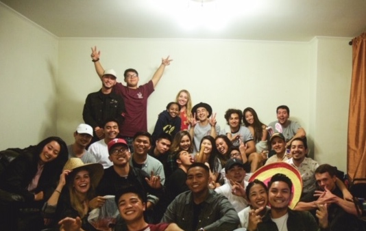
San Francisco, USA - 2016
Days before all of us graduated from the University of San Francisco, my best friends and I decided to have one last get together before each of us went our separate ways.
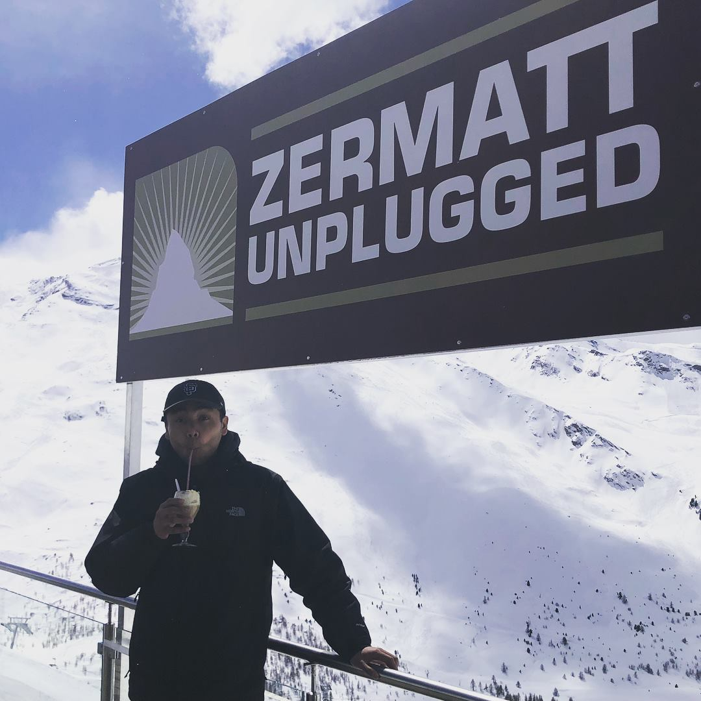
Zermatt, Switzerland - 2018
To cap off my three-week solo backpacking trip across Europe for the first time, my final destination was an acoustic music festival (Zermatt Unplugged) in the Swiss Alps.
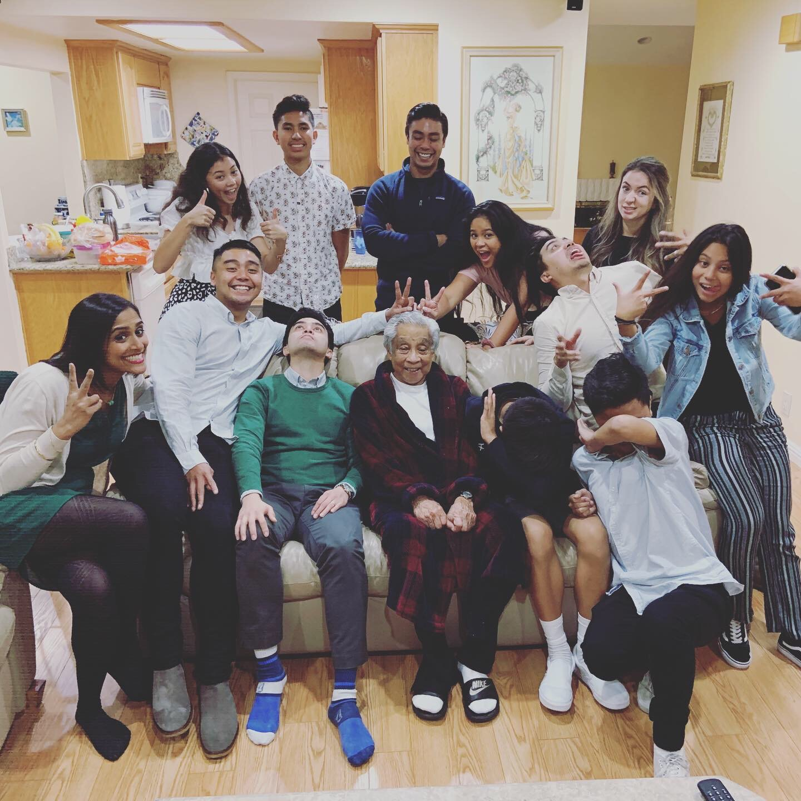
Cerritos, USA - 2018
My crazy cousins and I taking a funny picture with the greatest grandpa in the world before our annual family Christmas party!
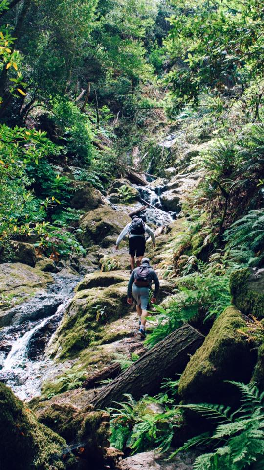
Cataract Falls, USA - 2017
Three of my good friends, including my roommate at the time (pictured in the back), and I decided to have a nice getaway in the nearby city of Stinson Beach to go hiking at this beautiful location!
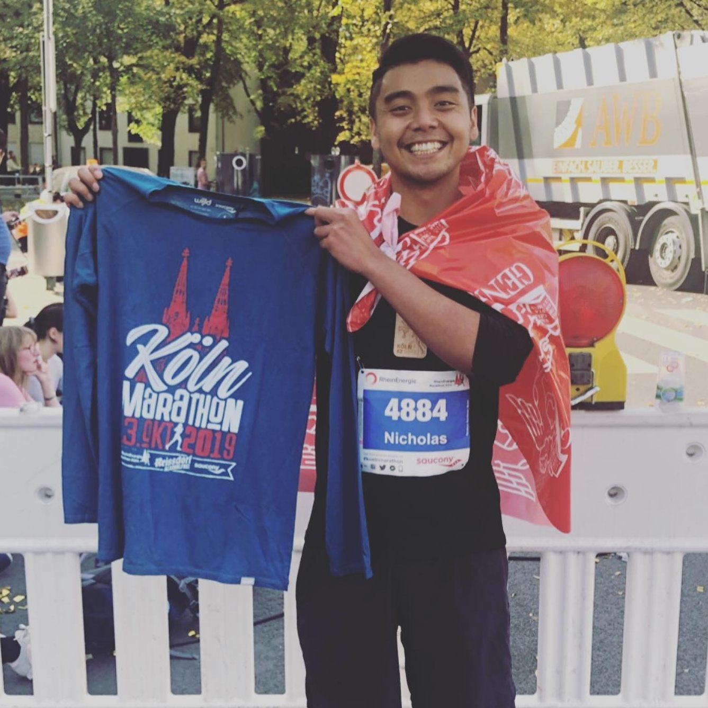
Cologne, Germany - 2019
Me after completing one of my lifelong goals of running a full marathon! What you can't see (thankfully...) was the amount of pain and exhaustion that I was going through and how I could barely even walk afterwards... Either way, it was all worth it once I crossed that finish line! :)
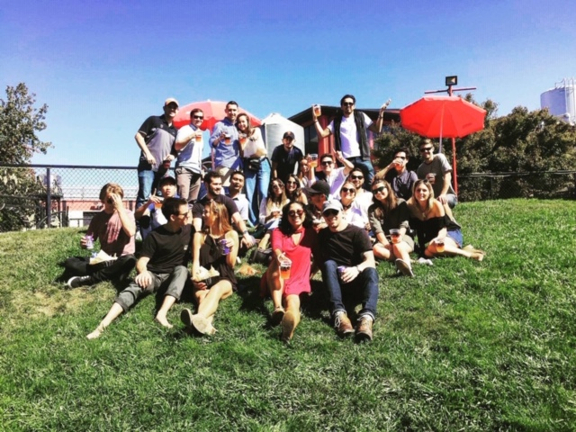
Petaluma, California - 2017
To celebrate one of my best friends birthdays, my friend group and I went to a local brewery (Lagunitas) with amazing beer and even better people!
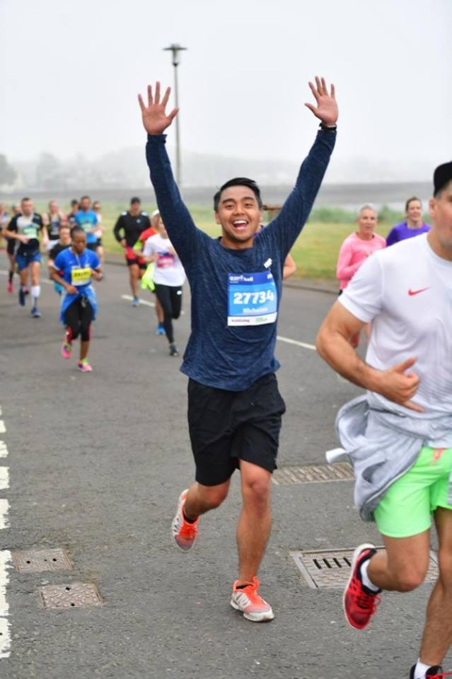
Edinburgh, Scotland - 2018
As you could probably tell by my big smile, I was super excited to be running in my first ever race, which happened to be the Edinburgh Half Marathon!
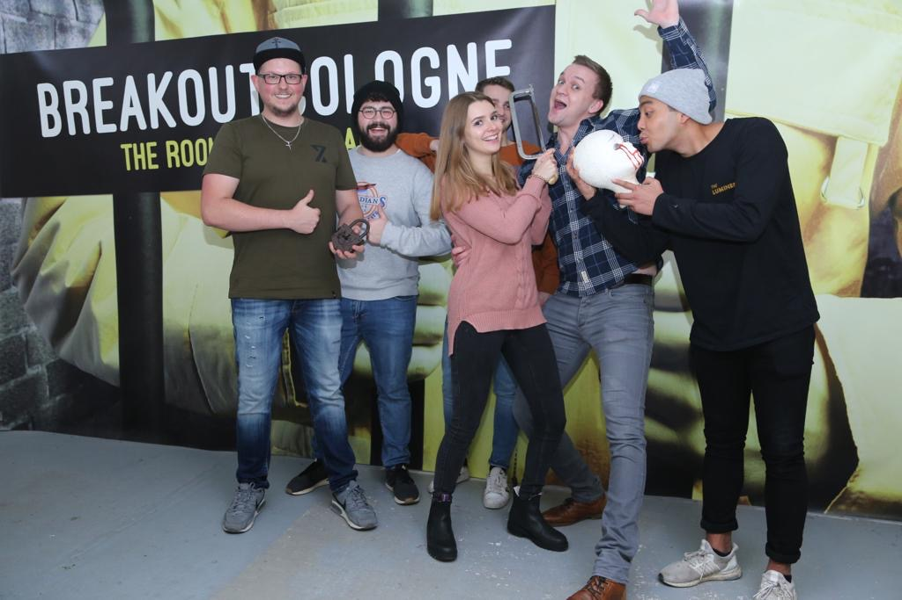
Cologne, Germany - 2019
To try something new, some of my friends and I actually completed an escape room - despite all the arguing and time pressure we were under :)
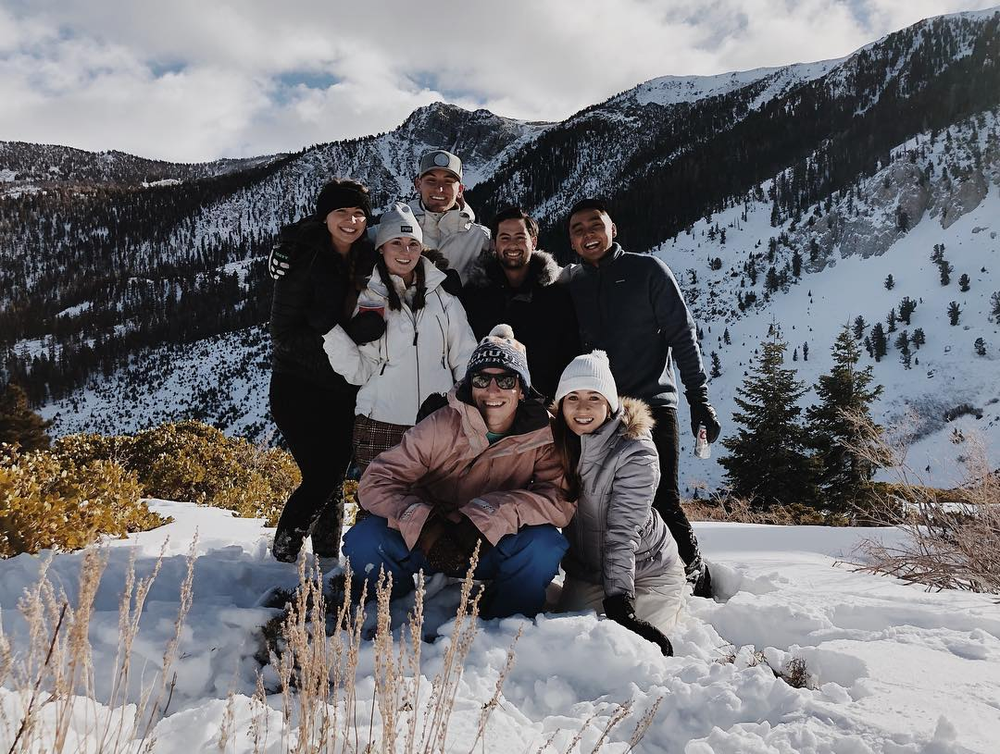
Lake Tahoe, California/Nevada - 2019
To celebrate the start of the New Year, some of my best friends and I spent a couple days in a cabin in Tahoe where we hung out, played board games, and played in the snow, which is something us Californians aren't all that used to
Contact
Email:
nicholas.a.abad@gmail.com
LinkedIn:
linkedin.com/in/nicholasabad
GitHub:
github.com/nicholas-abad